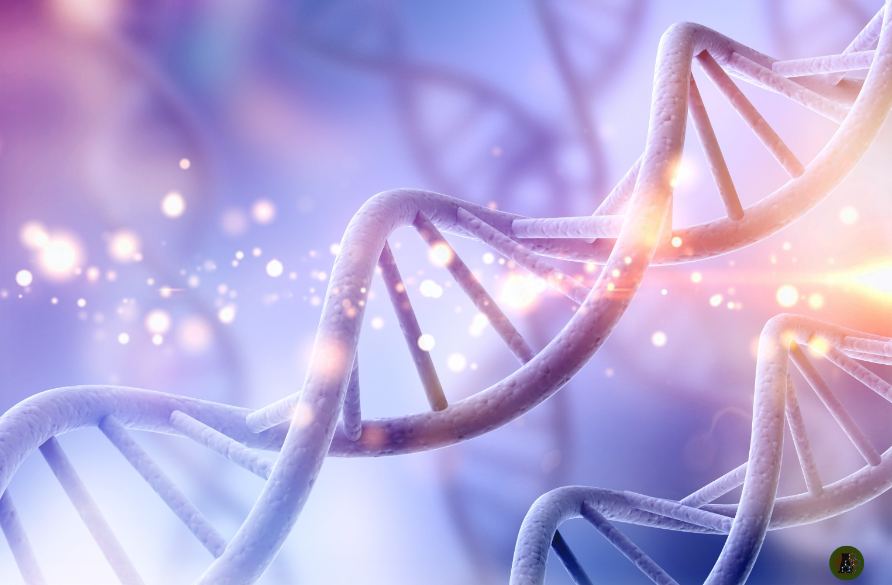
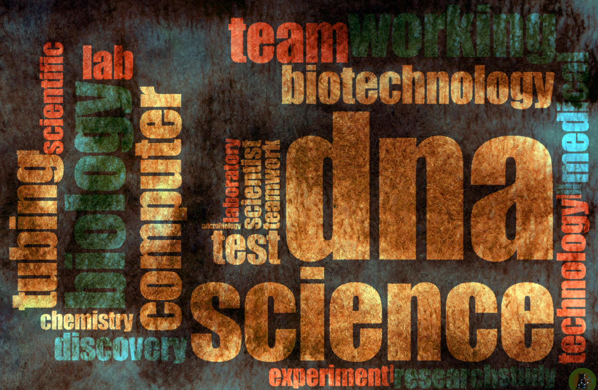
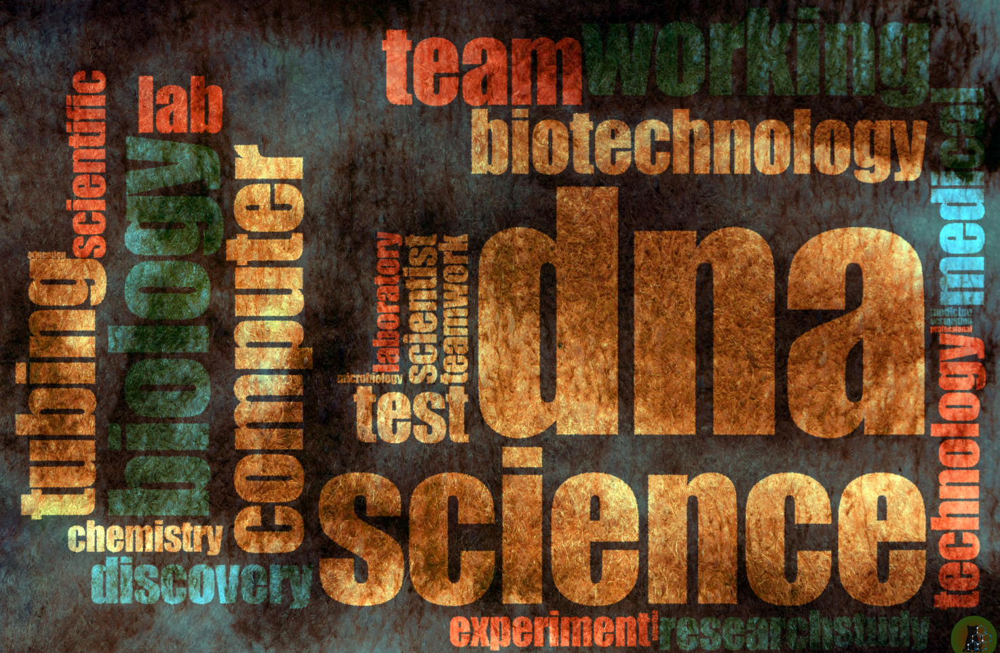
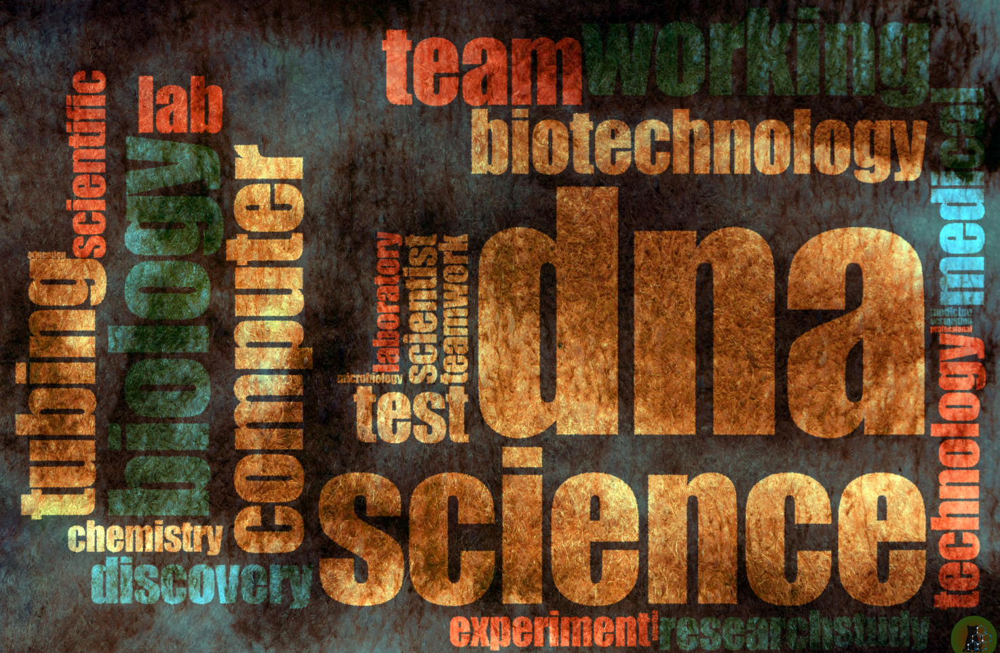
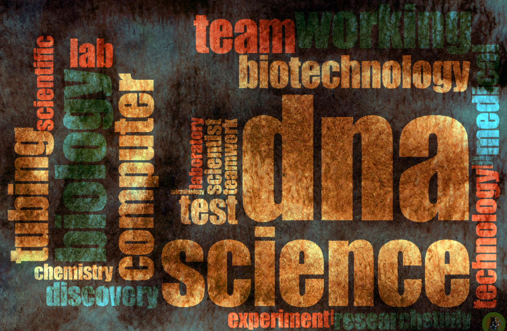

 


Biotechnology Transition Program
Transform your health sciences background into a future-ready career in biotechnology, research, and innovation.
Apply Now

Transform your health sciences background into a future-ready career in biotechnology, research, and innovation.
Apply Now“The best way to predict the future is to design it.” – Buckminster Fuller
Biotechnology is shaping the future of medicine, agriculture, sustainability, and even AI. As healthcare evolves, the need for skilled professionals who can blend scientific research, data, and technology is growing rapidly. This program empowers you to transition from traditional health sciences to cutting-edge biotech with clarity and confidence.
“Education is the most powerful tool which you can use to change the world.” – Nelson Mandela
Our 18-month program is divided into structured learning phases designed to help you move from foundational skills to high-impact biotechnology innovation.
Learn the essentials of reading, writing, creativity, and speaking. Develop clarity of thought and communication through immersive foundational experiences.
Understand lab design, equipment use, safety, and hands-on experimentation. Build the knowledge to run a real-world biotechnology lab.
Explore innovation, research processes, data science, machine learning, smart materials, and nanotechnology in medical science.
Learn the tools of digital innovation — software development, 3D visualization, clinical trials, and how to take a biotech idea from concept to prototype.